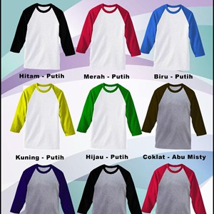

1.Kaos o-neck
Sesuai namanya, kaos ini memiliki lubang leher berbentuk bundar. marupakan kaos yang paling lazim ditemui dan merupakan bentuk awal kaos sebelum mengalami banyak modifikasi.

2. Kaos v-neck
Ya, bentuk lubang lehernya berbentuk V yang terdiri dari dua garis ribs yang bersudut di sekitar dada atas. Sudut pertemuannya bervariasi tergantung selera produsen.
3. Kaos u-neck
Memiliki desain lubang leher perpaduan antara O-neck dan V-neck. Sedikit membulat namun tidak menyudut tajam seperti V-neck.
4. Kaos y-neck
Merupakan variasi dari lubang leher berbentuk V namun dikarenakan ada tambahan kancing seperti pada kaos kerah, maka bentuknya menyerupai huruf Y.
5. Kaos turtleneck
Ya, diberi nama turtle alias kura-kura karena memang lubang lehernya memanjang persis seperti leher kura-kura.
6. Kaos raglan
kaos ini berbeda dari segi sambungan tangan. Bila pada kaos konvensional sambungan tangannya berbentuk diagonal dari ketiak ke pundak luar, maka Kaos Raglan memiliki sambungan tangan miring. Yaitu dari ketiak langsung ke lubang leher. Sehingga pola tangannya lebih besar. Warna sambungan lengan dengan badan pun biasanya berbeda. Kaos raglan ini juga memiliki variasi pada lubang lehernya. Ada kaos raglan dengan leher O-neck maupun V-neck.
